{kind=link}
{kind=link}
{kind=link}
{kind=link}
{kind=link}
{kind=link}
{kind=link}
{kind=link}
{kind=link}
{kind=link}
{kind=link}
{kind=link}
{kind=link}
{kind=link}
{kind=link}
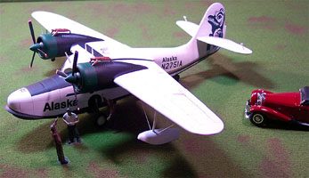 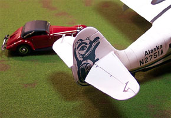
{kind=link}
{kind=link}
You may click on the above images to view larger pictures.


Czech Model 1/48 Grumman JRF Goose Utility Seaplane
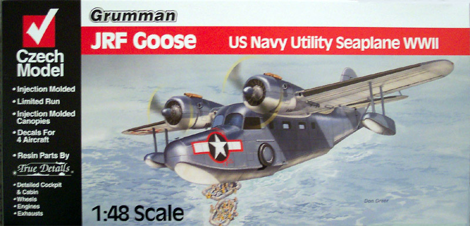
Kit #4812 MSRP $49.95 USD
Images, text and model Copyright � 2004 by Matt Swan
Developmental History
The Grumman Goose is a light amphibian transport plane, originally made in 1937. It has a wingspan of 50'10", and a length of 39'7". A twin-engine amphibian American designed monoplane seaplane based on a pre-war G-21 design, the Goose had showed remarkable durability. Originally envisioned as a 6 to 7 seat 'commuter' plane for businessmen in the Long Island area, the Goose rapidly became the utility plane of choice for several small air companies, as well as a primary rescue plane for the Coast Guard and other agencies. Its amphibious nature, generous interior space, and rugged construction enabled the Goose to go just about anywhere that a plane could conceivably go.
Initially designed as one of Grumman's passenger seaplanes, the aircraft went on to military use (JRF-1, JRF-6 depending on role), and civil service worldwide. The USN showed an interest in the amphibious aircraft in 1938, eventually acquiring 222 of the type. The aircraft also served with the US Coast guard and the US Army before serving in a military role with Britain, Canada, France, and Portugal. The Grumman Goose served with the Fleet Air Arm from 1942 until well after the war with 55 being delivered mostly to 749 squadron. The RCAF acquired the first example for use in 1938 and it was employed in communication and light transportation duties and until just recently the Goose was still in use by the RCMP. The last Goose registered in active service in Canada was retired in 1986. A total of 376 aircraft were built. The last new Goose was built in 1945.
The most incredible thing about the Goose is the amount of interior size it has especially for an aircraft that is only 39 feet long. The Goose theoretically has room for eight people including the pilot, but that wouldn't be comfortable for very long. A more realistic figure is a pilot and two or three passengers. Not counting the cockpit, which is about as roomy as the front seat of a small work truck, nor the closet/toilet area in the tail, the interior of the plane is about the size of a long van.
The Grumman Goose is still flying in a number of countries around the world, as well as being preserved in a few naval aviation museums. These days the only Geese in active use are to be found in the Caribbean or in Alaska and the Pacific Northwest where amphibious planes are still the most convenient way to get around.
The Kit
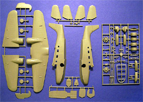
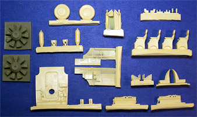
While model kits of this aircraft can be found aplenty in 1/72 scale this is the first 1/48 scale offering in an injection molding. Like many of the kits coming from Czech Model, this is a multi-media kit with the primary pieces done in a medium gray polystyrene and the engines and interior pieces done in beige resin. The box all this comes in is one of those dreaded �open this end� contraptions rather than the more typical two piece boxes that help you to keep all the loose pieces together during construction.
Inside the box there are three large trees of medium gray polystyrene injection molded parts, one tree of clear parts, a bag full of resin goodies, a very large sheet of decals and an instruction packet. All the plastic parts are sealed in one large bag, which resulted in one clear part being broken off the tree and scratched during transit. The plastic pieces display crisply engraved panel lines throughout however they are not fully engraved across the main body joints. When the fuselage is glued together each panel line will have to be scribed across the glue joint. There is light flash on some of the pieces and as the part gets smaller the level of flash seems to increase. Also there is a very noticeable mold misalignment on the smaller pieces such as the landing gear struts and propeller blades.
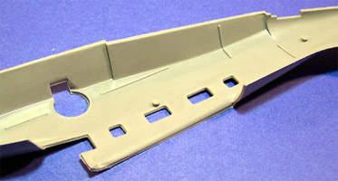
There are several very large injector pins inside the fuselage, rudder halves, elevator halves and wings. Some will not be a problem but others must be removed for proper parts fit. When the primary wing and fuselage pieces were dry fit I found that the starboard side of the cabin needed a lot of shaving and sanding in order for the wing to align properly. Even so, it is obvious that a degree of filler putty will be needed to smooth out the wing joint. The wing pieces fit together well but there is an odd casting seam on one side of each engine nacelle that will need some work to clean up.
Looking into the bag of resin parts we have four nicely cast passenger seats with molded in seat belts, odd thing, there are no belts for the crew seats. The resin is slightly brittle and there is a moderate amount of flash on these parts. The main cabin bulkhead is cast in resin while all other bulkheads are done in plastic. The backside of the resin bulkhead has some really nasty casting boogers right in the middle of it and major repair work will be necessary on this piece. While the kit does provide engines done in plastic we also get a set done in resin. Other resin pieces include tires, bombs and cabin sidewalls. Over all fine detail on the resin pieces looks pretty good.
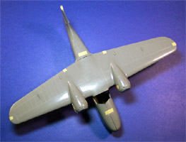
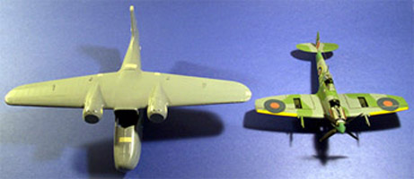
You can click on the above pictures to view a larger image. The comparison aircraft in the right hand picture is an ICM 1/48 Spit.
Instructions and Decals.
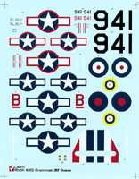
For instructions we are given a single foldout that comprises four pages of; historical information, a complete parts listing with pictures of the trees and resin pieces, ten exploded view construction steps and a page of painting and decal placement instructions. The construction steps appear to be clear and concise and include both painting instructions and rigging diagrams for the floats. Federal Standard numbers are given for the various exterior paint schemes.
Czech Model has provided us with markings for four different US and British military aircraft, no civilian markings are included. The decals appear to be of a medium thickness that will require some setting solution to make them conform well. Color density looks good and registry is good. While we get lots of national markings we get very little in the way of stencils and service markings.
Conclusions
I�m always happy to see new subjects come out in 1/48th scale, especially seaplanes. This kit is not of extremely high quality but high enough that with just a little work, looks like it will make into a very nice model. Currently there is very little available as far as aftermarket items for this aircraft. Engines and Things does make a Pratt and Whitney R-985 Wasp Jr. engine that could be fitted to this. Draw Decals has an extensive line of civilian aircraft markings in 1/72 that they are currently upgrading to fit this kit and those should be available very shortly.
It�s not a �Shake and Bake� kit but it is an unusual aircraft that filled an important role in both military and civilian history, definitely something to add to the collection.
Construction
2/18/04
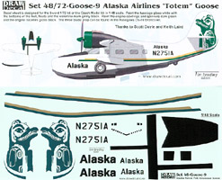
My decals came in from Draw Decals a few days ago. After much consideration of the many choices offered, I selected the Alaskan Airlines Totem scheme for my Goose. The decals cost $10.00 plus $2.00 for shipping and arrived within a week of ordering from Canada to the Continental U.S., not too shabby especially considering they print these when you place the order rather than have them sitting on a shelf aging. You can click on that small image of the decals to view a larger picture. The decals look to have very nice color density and the print registry is as good as any larger manufacture would produce. There is a brief painting guide included with them, simple placement instructions and suggestions to salvage propellers from a Hasegawa OV-10 Bronco. You need these three blade props to replace the kit two blade props. I went to an old Testors OV-10A Bronco kit that I had picked up at a yard sale for parts and salvaged those propellers � they look to be just fine for this conversion. Many civilian Geese had the wingtip floats retrofitted to be retractable (similar to a Catalina) so you need to be careful in your selection of aftermarket decals that the aircraft is converted properly. There are no aftermarket float conversions at this time for this retrofit so the modeler must scratch build these and modify the wingtips if needed. The aircraft I am modeling used the fixed floats so I am saved from this headache.
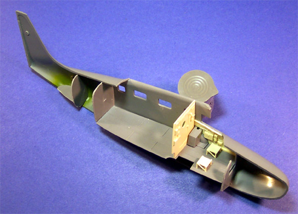
Construction started with the wing, the three main pieces fit together fairly well and were glued with Tenax 7R liquid cement. There is a nasty looking seam along one side of each engine nacelle that will require some fill. From here I moved to the fuselage and installed the plastic bulkheads first. The directions indicate that you should install the wheel wells first but I wanted to use the bulkheads and floor pan to help align the wheel wells over the fuselage holes. Since this is a civilian airliner the interior will not be military interior green. The wheel wells and insides of the engine cowling will be that shade of green so that was painted before installing the wheel wells. Both wheel wells had a nasty piece of dog turd cast into each one that had to be removed with the Dremel before installation. I have heard from some other modelers who own this kit and this defect seems to be consistant in all of them. There was a variety of fine flash that needed to be cleaned up around the window openings and around the edge of the cockpit. Each bulkhead needs to be sanded in order for the fuselage to close properly, they are all about 1mm wide. There were a few large injector pins that had to be shaved off the interior also. It is important to test fit the fuselage repeatedly during assembly.
The resin side panels for the cockpit needed very little trim work to fit in properly. The bases for the crew seats have been glued to the floor pan. The resin bulkhead behind the flight crew had a nasty casting defect on the reverse side that needed to be filled with super-glue and sanded back into shape before it could be glued to the floor pan.
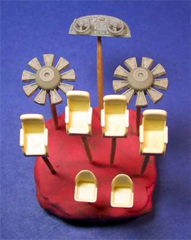
Moving right along, I have prepared many of the resin interior pieces for painting. Each piece has been cut from its casting block with a razor saw after which a small hole has been drilled into the base to provide an attachment point for a toothpick. Each toothpick is attached with a small drop of super-glue and accelerator. The engines, while gray in appearance, are indeed resin pieces. The dash and the wheels are plastic while the columns connecting the wheels to the dash are resin � don�t really understand the logic behind that one. Notice how the passenger seats all have nicely cast lap belts but the crew seats have none. I�m going to do a little research into this item and see if I need to make some foil belts for these seats. One other minor item, one each of the passenger seats I found a small bubble had formed at the end of the left armrest destroying that piece of the casting. On each one I had to place a very small drop of super-glue onto the end of the armrest and reform it with a diamond file. It was not hard nor took a lot of time but the defect was consistent on each seat.
A few other accessory pieces have been dealt with also, the elevators have been glued together, the engine cowlings have had the interior green painted and have been glued together and the tail fin has been glued and sanded. I also played around with one of the clear side windows. I found that if you sand a slight bevel onto the sides of the panes they fit very nicely into the frames and are flush with the outside surface. So far it has been a fairly trouble free build. Next, I�ll move into the paint room and start putting some color onto this bird.
2/24/04
As a military craft the interior areas of this plane would be painted Interior Green but I am modeling a civilian aircraft owned by Alaskan Airlines, the interior is not going to be green. I�ve chosen a two-tone blue scheme for the interior with the base color being PRU blue from Polly Scale and accents done in a darker blue. The passenger seats are a straightforward paint job with the lap belts done in a very light gray with silver buckles. After they had dried I dipped them in Future to seal the paint then washed them with a sludge wash. After the wash dried I wiped them with a damp cloth to brighten the raised areas and add just a little more depth.
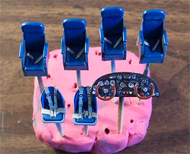
The instrument panel is also an easy piece to work with. After airbrushing the entire panel flat black I placed drops of flat white into the instrument faces. Reheat instrument decals were placed into these positions and snuggled down with a little Micro-Sol setting solution. Other details were picked out with red and yellow enamels and the entire dash was dry brushed with Tamiya acrylic silver. The control wheels were painted with some Testors Rust to simulate a dark leather grip and the centers were touched with Tamiya silver.
The crew seats required the most work, they are provided as military style seats meaning that the crew member sitting here would have a parachute pack on which would form the seat cushion. When I board a civilian airliner and I see the flight crew wearing parachutes my confidence is definitely affected in a detrimental manner, I�ll tell you that for nothing. To civilianize the seats I cut short lengths of Evergreen flat stock to fit into the seat pan, sanded the edges and corners round and glued them in place with a small dab of Testors glue from the orange tube � that stuff still has it�s uses. For seat belts I went to the spare decal box and found a set of old Tamiya seat belt decals. These I cut out and left on the paper backing, simply super-gluing the entire thing to the seat, which added a little more depth to the interior.
2/25/04
A few days ago when I was playing with the clear parts I had dipped them all in Future Floor Polish so they have had a while to fully cure. Initially I thought the clear pieces would fit right in but now I�m finding that each one needs to be individually sanded to fit and so too do the openings in the fuselage. Each pane was masked with masking tape and secured into the fuselage with Testors Clear Parts cement. Overall I spent about an hour installing the clear panes.
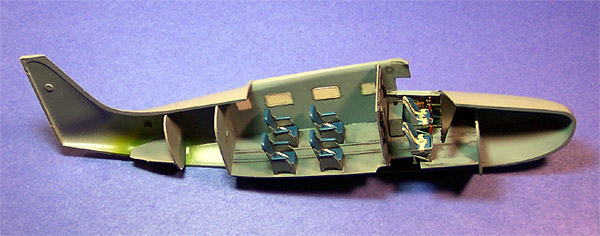
The next item to address is the completed dashboard. I have taped the fuselage together, placed a drop of super-glue onto the inner edge of the cockpit where the dash will make contact then inserted the piece with tweezers and positioned it. Once the glue had set enough to hold the dash I opened the fuselage back up and added more glue to the backside of the dash to fortify the joint. Early in the construction process I had glued the supports for the crew seats onto the floor pan per the kit instructions but now, when I dry fit the floor pan, I see that the control columns will be nearly touching the backs of the seats. I carefully cut the supports off the floor pan, attached the seats to them and then repositioned them to sit a proper distance form the dash. Compare the seat positions in this picture with the positions in the earlier, unpainted picture. See how the outside leg of the seat support is suspended outside of the floor pan? It will ultimately rest on part of the landing gear bay.
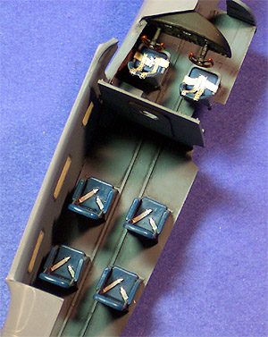
I ran into a similar problem with the passenger seats. If you place the seats per the instructions not a single passenger would be able to look out a window � this just doesn�t make sense to me. If you move them to the rear of the aircraft about a quarter inch they line up much better. For the interior areas of the cockpit I painted the channels for various electrical lines steel, junction boxes and control panels black with silver details and highlights and the map case leather brown. Notice in this picture to the right how well the seats line up with the windows and how the crew seats are in relation to the controls. Also take note of the gap between the forward bulkhead and the cabin wall, this will compress when the wing is placed.
3/2/04
All of the windows have been glued in place and have had plenty of time for the glue to dry. Each pane gets buffed with a cotton swab to remove any fingerprints I may have left behind when installing them. Now I can work on closing up the fuselage. Even after repeated sanding of the various bulkheads this is still a very tight fit. I work in small sections securing the upper front section of the fuselage seam first, holding it in place until the glue has set. Then I worked my way down the spine of the aircraft and into the tail. Underneath the fuselage things get a little dicey, the bottom pieces need to be stressed to meet which requires that I work in even smaller sections to allow the glue to harden and hold the shape. I spent an entire evening session getting these two fuselage pieces together.
A day has passed and all the glue joints have hardened. The excess is trimmed with a razor knife then the seams are rough sanded with a 240 sanding stick. There is one small section on the bottom seam that I could not fully close and had to fill with some superglue. The seams are finished with very fine sand paper and I can start to look at repairing the panel lines. If you will recall in the kit review I said that the panel lines did not carry across the seams.
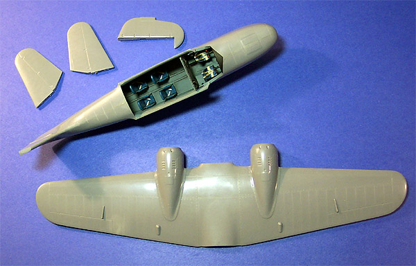
I start the repair by rocking a leaf blade Xacto knife across the panel line location to score it. Then I used a triangular diamond file and gently filed the new panel line into place. In this manner I was able to create panel lines of the same depth and width as on the rest of the kit. This had to be done all across the top, bottom and tail of the model. I test fit the main wing and found that I had to sand a little off the backside of the fuselage mounting area, some off the back of the wing and some off the front of the wing to get a good fit.
I�ve gone over the wing, elevators and rudder again with very fine sand paper making sure all the leading edge seams are smooth and clean. So far I have only had to use filler at two locations on this model; a little super-glue filler on the bottom of the hull and a very small dab on the side of one engine nacelle. Tomorrow the sub-assemblies will be glued together.
3/9/04
When I was putting together subassemblies the instructions were real specific on the elevators that 1 and 3 went on one 2 and 4 went on the other side. On close inspection I could not find any noticeable difference from one side to the other but just in case I was missing some fine detail I took an Acetate pen and marked the �B� surface with the part numbers.
Earlier I had assembled the floats and now I am doing the final preparations on them prior to installation. Obviously all the seams must be sanded and finished but more importantly is to prep them for the support rigging. There will be four support guy wires on each float running to the wing and these must be snug when complete to look good. My plan is this; each float has a fine dimple where the wire should mount, I drill the dimple out with a very fine tip drill and after the float is glued to the wing I shall superglue one end of a piece of invisible thread into the hole. Next I shall drill completely through the wing and run the thread out the top of the wing. A drop of superglue will be applied to the bottom side hole while the thread is drawn tight then it will be cut off from the top and the remaining hole will be filled and finished. Sound good? We�ll see how it works out in practice shortly.
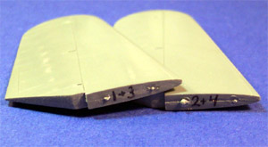 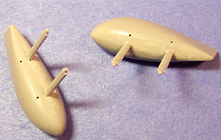 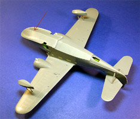
The far right picture above you can click on for a larger image. In that image the red arrow indicates a dark line � that is not a crack but is a superglue fill where I could not get the hull to completely meet. The guy wires have not been installed yet either. The bracing on the elevators have had pilot holes drilled into the fuselage and the ends that rest on the elevator have been shaved at an angle then glued in place. I have to get the main windscreen masked and installed, get the guy wires in and then this can be primed and readied for some white paint.
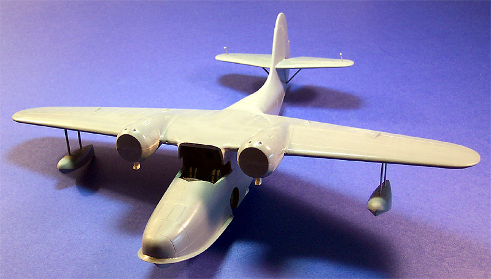
3/14/04
After masking the two-piece canopy I started trying various installation methods. First I tried gluing the pieces together with Testors Clear Parts cement and then putting it in but this did not work. Ultimately I separated the pieces and started from square one. This is how I finally got it in place.
1. With a diamond needle file I opened up the side panels of the fuselage just a little until the clear piece fit into the opening.
2. Starting with pilot's side, I bevel the bottom of the front clear piece to meet the front fuselage and beveled the front inside corner of the clear piece.
3. Install the pilot side piece making sure that the front point is right on the center seam of the fuselage using Testors Clear Parts cement. Wipe the inside of the clear part with a tack cloth to remove fingerprints before gluing.
4. Once that had dried I fit the second piece beveling the same areas.
5. Once the fit is good line all but the top half of the center section with a bead of Clear Parts Cement. The short span in the center above the front window gets a fine bead of superglue. (Be sure to Future before you start this fitting process).
6. Fit the piece and hold in position for about five minutes while the glue sets up.
7. After glue has dried carefully trim center seam with razor and sand with fine paper.
Whew, what a job that was but looks pretty good. I did have to add a little putty along one side to help blend it into the fuselage. Next I get to string the float guy wires. All the pilot holes have been drilled already so all I�ve got to do is thread the .005 invisible thread through the holes and secure the float end with a drop of superglue. Once that had a moment to set I pulled the string tight and applied another small drop of superglue to the underside of the wing using the tip of my razor knife. Pause for a moment to let this set then I cut the remaining thread off the top of the wing and filled that hole with superglue. After hitting it with some accelerator I shaved the high points off with a razor knife and dressed the spot with some very fine sandpaper. I cut some thin flat stock and made a few aerials for the top of the fuselage and placed them per my reference photos.
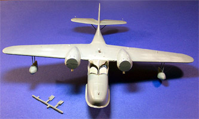
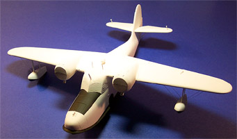
Click on the above images to view larger pictures
Finally, I can get some paint on this baby. I�m starting off with my reliable Model Master gray primer cut 30% with lacquer thinner. While this was drying overnight I did some work on the propeller conversion. Remember, I am not using the kit props but am substituting a Testors OV-10A Bronco set of props. 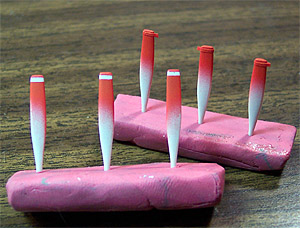 These are individual blades with a two part spinner. Each of the blades has a nasty injector pin mark on the back side that I needed to sand down then I stuck them into a lump of modeling clay and airbrushed the tips with Testors Flat White and set them aside to dry.
A day has passed and the model is ready for some final color. I�m using Model Master Header Flat White enamel and I�m cutting it 30% with lacquer thinner. The entire model gets several light coats to build up a good color density. Every time I put a coat of paint on this I am making certain to hit the guy wires to build them up a little also and to help with paint adhesion when I put a final color on them. I�m not really worried about coating the bottom of the hull and floats because they will be black. This gets another day to dry and I�m back to the props. I�ve cut a thin piece of masking tape and wrapped it around the tip of each blade then airbrushed the blades red. What I�m doing is creating a three-band warning stripe that will be red/white/red. I�ve removed the strip of tape and set these aside to dry another day before masking them one more time for the black paint.
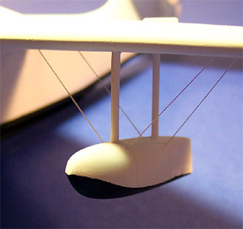
Whew, yet another day has passed and I can start laying some black paint onto the model. The bottoms of the wing floats have been brush painted and the anti-glare patch has been masked and airbrushed. The Draw Decals sheet does include a decal for this area but I thought it would be easier to just mask it and shoot it. Once the anti-glare panel had a few hours of dry time I masked off the main hull and hit it with some Testors Flat Black. I cut my air pressure down to about 10 psi to reduce over spray but still ended up with a few spots on the white. I came back with the white and touched that up then removed all the paint masks. The tissue packing came out of the wheel bays and I touched up all paint seams with a fine brush. I still have to mask the engine nacelles but that will be another day of modeling.
3/18/04
It certainly has been an exciting couple of days of modeling, things have been coming together very nicely. I have finished off the propeller assemblies with some flat black paint then glued the props and spinner covers in place � boy, do these look nice. I will wait until all weathering has been completed before I glue these in place to reduce to possibility of breaking something during the final steps. The landing gear struts have been painted and the wheels have been finished also. I airbrushed the wheels flat white then masked off the centers before coating them with some flat black. Once these parts had dried they were installed and the Goose stood on her own feet for the first time � a very fulfilling moment.
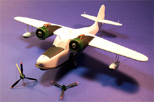
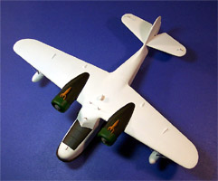
I masked the left side engine nacelle and blanketed the rest of the model with tissue paper before shooting some flat black paint. After it had set for an hour I removed that mask and repeated the process for the right side. The engine assemblies were attached with a large drop of superglue on the backside of the cylinder block and carefully held in alignment until that had set. The final assembly detail was the supercharger plumbing on the top of the engine. This is a two-piece resin assembly that was painted with Polly Scale Rust then dry brushed with Testors Rust which is quite a bit darker and with that the basic construction was completed. Next she gets a day or two for all the paint to fully cure then I will seal it up with some Future Floor Polish. You can click on either of those pictures to the right to view a larger image.
3/22/04
The Future Floor Polish was allowed to cure for two days then I began to apply the decals. These are like ALPS printed decals, which means the carrier sheet covers the entire surface. You must cut fairly close to the printed image but must also be sure to leave a small boarder around the artwork. I did not leave enough of a boarder on a few of these and when I applied Micro-Sol solution it released some of the ink. It was not a huge problem but I could have avoided it. On the black walk way some of the ink had not set properly and lifted when I wet the decal. Again this was not a huge problem and was remedied with some flat black paint after the decals had dried. On two decals I managed to get them folded back upon themselves and had to screw around with that for about fifteen minutes before I could get them down properly. I used Micro-Set and Micro-Sol setting solutions and the decals responded very well to them. Overall the decals were very nice and had good color density, I would not hesitate to purchase more decals from Draw Decals in the future.
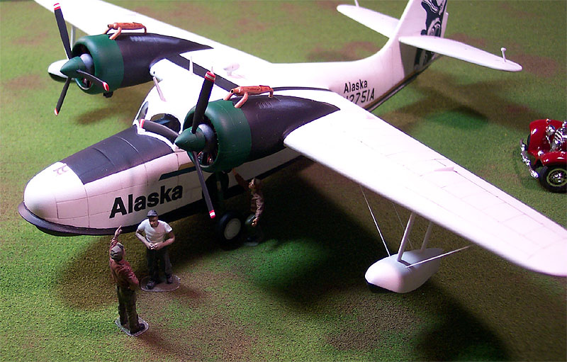
After the decals had cured for an evening I came back and brushed some Future over just the decaled areas to seal them and let it set for another day. When I did this color wanted to bleed from the green tail decal where I had cut it too close to the artwork so take heed and don�t make my mistake if you use these decals. Next came the panel wash. I did not want this to be too stark so rather than use the brown and black inks I decided to try making my sludge wash with a gray pastel chalk. The process was the same as any other sludge wash and consisted of some ground chalk, water, a drop of liquid soap and some Liquitex Flow Aid (see the Basics of Weathering) . The wash went on very nicely and the excess was wiped off with a damp piece of paper towel. Another couple hours of dry time and she got a coat of Polly Scale Clear Flat to seal the wash. The final detail was some more ground gray chalk brushed over the engine vents, very lightly, and she is done.
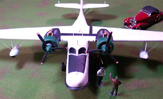
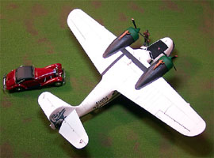
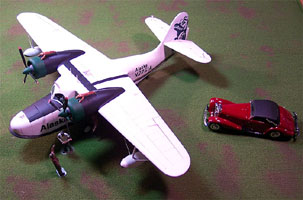
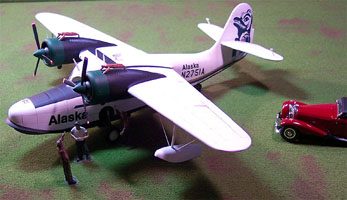
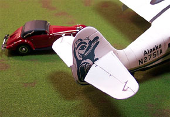
You may click on the above images to view larger pictures.